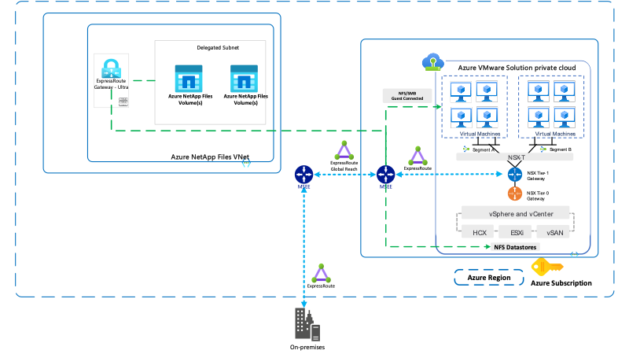
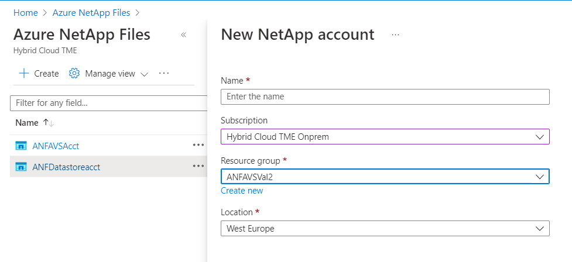
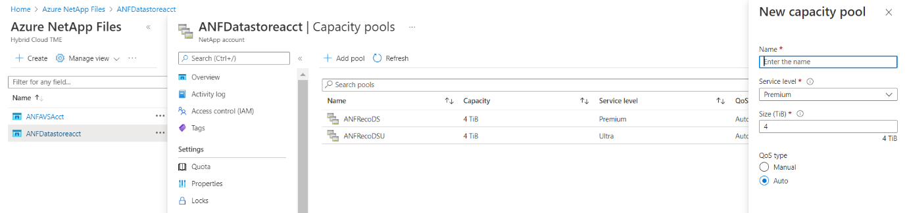
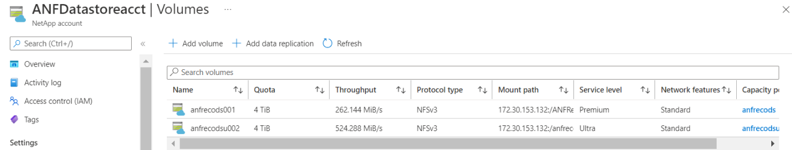
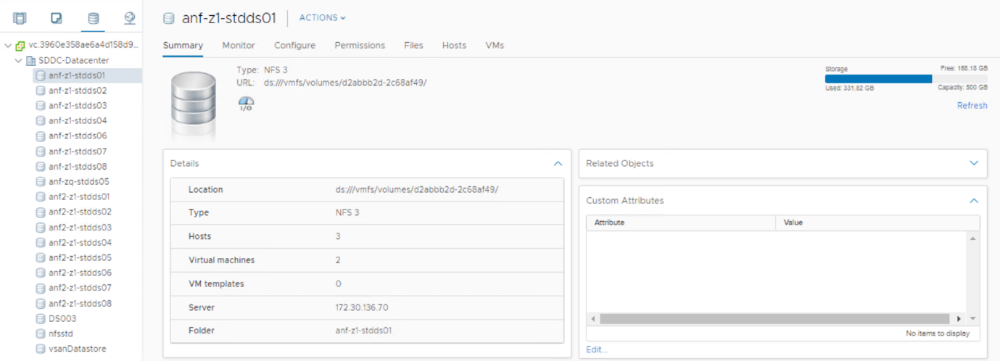
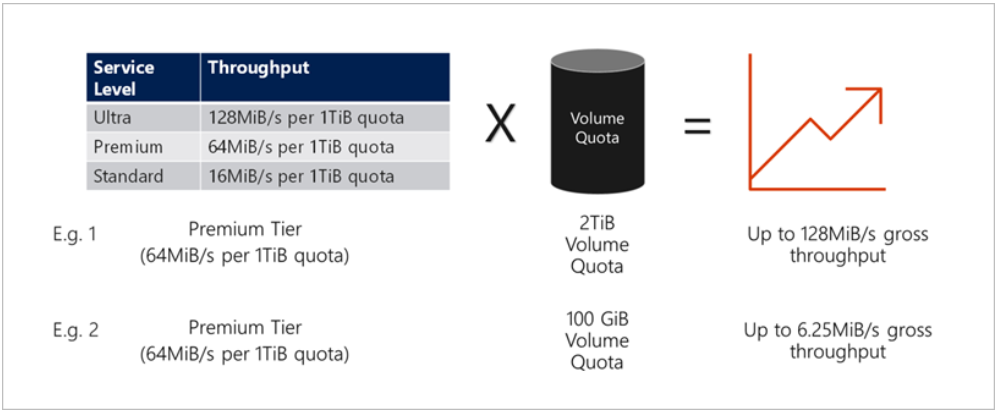
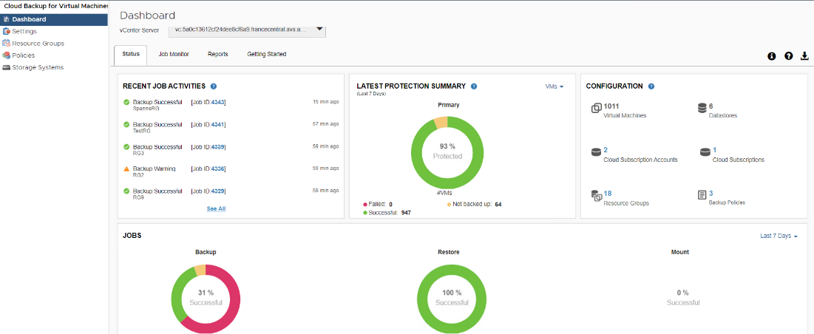

문서 변경 요청
문서 변경 요청 이 페이지 편집
이 페이지 편집 기여하는 방법 자세히 알아보기
기여하는 방법 자세히 알아보기Azure의 네이티브 NFS 데이터 저장소 옵션
기여자
NFS 데이터 저장소 지원은 vSphere의 스토리지 기능을 크게 확장해 주는 사내 구축 환경의 ESXi 버전 3에서 도입되었습니다.
vSphere on NFS는 강력한 성능과 안정성을 제공하기 때문에 사내 가상화 구축에 널리 채택되는 옵션입니다. 사내 데이터 센터에 NAS(Network-Attached Storage)가 많이 있는 경우 Azure NetApp 파일 데이터 저장소와 Azure에 Azure VMware 솔루션 SDDC를 구축하여 용량 및 성능 문제를 해결하는 것이 좋습니다.
Azure NetApp Files는 업계 최고의 고가용성 NetApp ONTAP 데이터 관리 소프트웨어를 기반으로 구축되었습니다. Microsoft Azure 서비스는 기본, 메인스트림, 전문 등 세 가지 범주로 분류됩니다. Azure NetApp Files는 특수 범주에 속하며 이미 여러 지역에 배포된 하드웨어를 통해 지원됩니다. Azure NetApp Files에는 고가용성(HA)이 내장되어 있어 대부분의 운영 중단으로부터 데이터를 보호하고 업계 최고 수준의 SLA를 제공합니다 "99.99%" 가동 시간.
Azure NetApp Files 데이터 저장소 기능을 도입하기 전에 성능 및 스토리지 집약적인 워크로드를 호스팅하려는 고객을 위한 스케일아웃 작업에 컴퓨팅 및 스토리지를 모두 확장해야 했습니다.
다음 문제를 명심하십시오.
-
SDDC 클러스터에서는 불균형 클러스터 구성을 사용하지 않는 것이 좋습니다. 따라서 스토리지 확장이란 호스트를 더 추가하는 것을 의미하며, 이는 더 많은 TCO를 의미합니다.
-
하나의 vSAN 환경만 가능합니다. 따라서 모든 스토리지 트래픽이 운영 워크로드와 직접 경쟁합니다.
-
애플리케이션 요구사항, 성능, 비용을 맞추기 위해 여러 성능 계층을 제공하는 옵션은 없습니다.
-
클러스터 호스트 위에 구축된 vSAN의 스토리지 용량 제한에 쉽게 도달할 수 있습니다. Azure NetApp Files와 같은 Azure 네이티브 PaaS(Platform-as-a-Service) 오퍼링을 데이터 저장소로 통합하여 고객은 스토리지를 독립적으로 확장하고 필요에 따라 SDDC 클러스터에만 컴퓨팅 노드를 추가할 수 있습니다. 이 기능을 통해 위에서 설명한 과제를 극복할 수 있습니다.
또한 Azure NetApp Files를 사용하면 여러 데이터 저장소를 배포할 수 있습니다. 이 데이터 저장소는 가상 머신을 적절한 데이터 저장소에 배치하고 워크로드 성능 요구 사항을 충족하는 데 필요한 서비스 수준을 할당하여 온-프레미스 구축 모델을 모방하는 데 도움이 됩니다. 멀티 프로토콜 지원의 고유한 기능을 통해 게스트 스토리지는 SQL 및 Oracle과 같은 데이터베이스 워크로드를 위한 추가 옵션일 뿐만 아니라 네이티브 NFS 데이터 저장소 기능을 사용하여 나머지 VMDK를 저장합니다. 이와 별도로 네이티브 스냅샷 기능을 사용하여 신속한 백업 및 세분화된 복원을 수행할 수 있습니다.

|
스토리지의 계획 및 사이징, 필요한 호스트 수를 결정하려면 Azure 및 NetApp 솔루션 설계자와 접촉하십시오. 테스트, POC 및 운영 구축을 위한 데이터 저장소 레이아웃을 최종적으로 완료하기 전에 스토리지 성능 요구사항을 파악하는 것이 좋습니다. |
상세 아키텍처
개략적으로 보면, 이 아키텍처는 온프레미스 환경과 Azure에서 하이브리드 클라우드 연결 및 애플리케이션 이동성을 달성하는 방법을 설명합니다. 또한 Azure NetApp Files를 네이티브 NFS 데이터 저장소로 사용하거나 Azure VMware 솔루션에서 호스팅되는 게스트 가상 머신을 위한 게스트 내 스토리지 옵션으로 사용하는 방법에 대해서도 설명합니다.

사이징
마이그레이션 또는 재해 복구의 가장 중요한 측면은 타겟 환경에 적합한 크기를 결정하는 것입니다. 온프레미스에서 Azure VMware 솔루션으로 이동하는 데 필요한 노드 수를 이해하는 것이 매우 중요합니다.
크기를 조정하려면 RVTools(권장) 또는 Live Optics 또는 Azure Migrate 등의 다른 도구를 사용하여 온프레미스 환경의 기록 데이터를 사용합니다. RVTools는 vCPU, vmem, vDisk 및 전원이 켜져 있거나 꺼진 VM을 비롯한 모든 필수 정보를 캡처하여 타겟 환경의 특성을 파악하는 데 이상적인 툴입니다.
RVtools를 실행하려면 다음 단계를 완료하십시오.
-
RVTools를 다운로드하여 설치합니다.
-
RVTools를 실행하고 필요한 정보를 입력하여 온-프레미스 vCenter Server에 연결한 다음 Login을 누릅니다.
-
재고를 Excel 스프레드시트로 내보냅니다.
-
스프레드시트를 편집하고 vInfo 탭에서 적합한 대상이 아닌 VM을 제거합니다. 이 접근 방식은 필요한 수의 호스트를 사용하여 Azure VMware SDDC 클러스터의 크기를 올바르게 지정하는 데 사용할 수 있는 스토리지 요구 사항에 대한 명확한 출력을 제공합니다.
|
|
게스트 내 스토리지와 함께 사용되는 게스트 VM은 별도로 계산되어야 합니다. 그러나 Azure NetApp Files는 추가 스토리지 용량을 쉽게 처리할 수 있으므로 전체 TCO를 낮게 유지할 수 있습니다. |
Azure VMware 솔루션 구축 및 구성
온프레미스와 마찬가지로 Azure VMware 솔루션을 계획하는 것은 가상 머신 생성 및 마이그레이션을 위한 성공적인 프로덕션 준비 환경에 매우 중요합니다.
이 섹션에서는 게스트 내 스토리지를 포함하는 데이터 저장소로서 Azure NetApp Files와 함께 사용할 AVS를 설정하고 관리하는 방법에 대해 설명합니다.
설정 프로세스는 다음 세 부분으로 나눌 수 있습니다.
-
리소스 공급자를 등록하고 프라이빗 클라우드를 생성합니다.
-
새 또는 기존 ExpressRoute 가상 네트워크 게이트웨이에 연결합니다.
-
네트워크 연결을 확인하고 프라이빗 클라우드에 액세스합니다. 이를 참조하십시오 "링크" Azure VMware SDDC 솔루션 구축 프로세스에 대한 단계별 안내를 제공합니다.
Azure VMware 솔루션으로 Azure NetApp Files를 구성합니다
Azure NetApp Files 간의 새로운 통합을 통해 Azure VMware 솔루션 리소스 공급자 API/CLI를 통해 Azure NetApp Files 볼륨을 포함하는 NFS 데이터 저장소를 생성하고 프라이빗 클라우드에서 원하는 클러스터에 데이터 저장소를 마운트할 수 있습니다. VM 및 애플리케이션 VMDK를 구축하는 것 외에도 Azure NetApp 파일 볼륨은 Azure VMware Solution SDDC 환경에서 생성된 VM에서 마운트할 수 있습니다. Azure NetApp Files는 SMB(서버 메시지 블록) 및 NFS(네트워크 파일 시스템) 프로토콜을 지원하기 때문에 Linux 클라이언트에 볼륨을 마운트하고 Windows 클라이언트에 매핑할 수 있습니다.
|
|
최적의 성능을 위해 Azure NetApp Files를 프라이빗 클라우드와 동일한 가용성 영역에 구축하십시오. Express Route Fastpath가 포함된 코로케이션을 통해 최소한의 네트워크 지연 시간으로 최고의 성능을 제공합니다. |
|
|
이 기능은 현재 공개 미리보기에 있습니다. |
Azure NetApp File 볼륨을 Azure VMware Solution 프라이빗 클라우드의 VMware 데이터 저장소로 연결하려면 다음 사전 요구 사항이 충족되어야 합니다.
-
az 로그인을 사용하고 구독이 Microsoft.AVS 네임스페이스의 CloudSanExperience 기능에 등록되어 있는지 확인합니다.
az login –tenant xcvxcvxc- vxcv- xcvx- cvxc- vxcvxcvxcv az feature show --name "CloudSanExperience" --namespace "Microsoft.AVS"
-
등록되지 않은 경우 등록한다.
az feature register --name "CloudSanExperience" --namespace "Microsoft.AVS"
|
|
등록을 완료하는 데 약 15분 정도 걸릴 수 있습니다. |
-
등록 상태를 확인하려면 다음 명령을 실행합니다.
az feature show --name "CloudSanExperience" --namespace "Microsoft.AVS" --query properties.state
-
등록이 15분 이상 중간 상태로 고착된 경우 등록을 취소한 다음 플래그를 다시 등록하십시오.
az feature unregister --name "CloudSanExperience" --namespace "Microsoft.AVS" az feature register --name "CloudSanExperience" --namespace "Microsoft.AVS"
-
구독이 Microsoft.AVS 네임스페이스의 AnfDatastoreExperience 기능에 등록되어 있는지 확인합니다.
az feature show --name "AnfDatastoreExperience" --namespace "Microsoft.AVS" --query properties.state
-
VMware 확장 프로그램이 설치되어 있는지 확인합니다.
az extension show --name vmware
-
내선이 이미 설치되어 있는 경우 버전이 3.0.0인지 확인합니다. 이전 버전이 설치된 경우 확장을 업데이트하십시오.
az extension update --name vmware
-
확장자가 아직 설치되지 않은 경우 설치하십시오.
az extension add --name vmware
-
Azure Portal에 로그인하고 Azure NetApp Files에 액세스합니다. az provider register"--namespace Microsoft.NetApp –wait 명령을 사용하여 Azure NetApp Files 서비스에 대한 액세스를 확인하고 Azure NetApp Files 리소스 공급자를 등록합니다. 등록 후 NetApp 계정을 만드십시오. 이를 참조하십시오 "링크" 를 참조하십시오.

-
NetApp 계정을 생성한 후 필요한 서비스 수준 및 크기의 용량 풀을 설정합니다. 자세한 내용은 이를 참조하십시오 "링크".

| 기억해야 할 사항 |
|---|
|
-
Azure NetApp Files에 대해 위임된 서브넷을 구성하고 볼륨을 생성할 때 이 서브넷을 지정합니다. 위임된 서브넷을 생성하는 자세한 단계는 이것을 참조하십시오 "링크".
-
용량 풀 블레이드 아래에 있는 볼륨 블레이드를 사용하여 데이터 저장소에 대한 NFS 볼륨을 추가합니다.

크기 또는 할당량별 Azure NetApp Files 볼륨 성능에 대한 자세한 내용은 을 참조하십시오 "Azure NetApp Files에 대한 성능 고려 사항".
Azure NetApp Files 데이터 저장소를 프라이빗 클라우드에 추가하려면 다음 단계를 수행하십시오.
-
필요한 기능을 등록한 후 적절한 명령을 실행하여 NFS 데이터 저장소를 Azure VMware Solution 프라이빗 클라우드 클러스터에 연결합니다.
-
Azure VMware Solution 프라이빗 클라우드 클러스터에서 기존 ANF 볼륨을 사용하여 데이터 저장소를 생성합니다.
C:\Users\niyaz>az vmware datastore netapp-volume create --name ANFRecoDSU002 --resource-group anfavsval2 --cluster Cluster-1 --private-cloud ANFDataClus --volume-id /subscriptions/0efa2dfb-917c-4497-b56a-b3f4eadb8111/resourceGroups/anfavsval2/providers/Microsoft.NetApp/netAppAccounts/anfdatastoreacct/capacityPools/anfrecodsu/volumes/anfrecodsU002
{
"diskPoolVolume": null,
"id": "/subscriptions/0efa2dfb-917c-4497-b56a-b3f4eadb8111/resourceGroups/anfavsval2/providers/Microsoft.AVS/privateClouds/ANFDataClus/clusters/Cluster-1/datastores/ANFRecoDSU002",
"name": "ANFRecoDSU002",
"netAppVolume": {
"id": "/subscriptions/0efa2dfb-917c-4497-b56a-b3f4eadb8111/resourceGroups/anfavsval2/providers/Microsoft.NetApp/netAppAccounts/anfdatastoreacct/capacityPools/anfrecodsu/volumes/anfrecodsU002",
"resourceGroup": "anfavsval2"
},
"provisioningState": "Succeeded",
"resourceGroup": "anfavsval2",
"type": "Microsoft.AVS/privateClouds/clusters/datastores"
}
. List all the datastores in a private cloud cluster.
c:\Users\niyaz>VMware 데이터 저장소 목록 — resource-group anfavsval2—cluster cluster cluster cluster -1—private-cloud ANFDataClus [{"diskPoolVolume":null, "id":"/Subscriptions/0efa2dffb-917c-bourceGroup" vav-vav "AVS Microsoft.NetApp/netAppAccounts/anfdatastoreacct/capacityPools/anfrecods/volumes/ANFRecoDS001"" vev-vav-vav-vav-vev-vav-vav-vav "AVS" AVS" AVS" vav "AVS/recev-vav-vav-vav-vav-vav-vav-vav-vav-vav-av-av-av-av-av "AVS" AVS" AVS" AVS".2" ev-av-av-av-vev-av-av-vev-vav "AVS" vav-av-av- {"diskPoolVolume":null, "id":"/Subscriptions/0efa2dfb-917c-4497-b56a-b3f4eadb8111/resourceGroups/anfavsourceGroup/anfavource2/providers/microsoft.AVS/privateClouds/ae4recorivae17002 "Microsoft.NetApp/netAppAccounts/anfdatastoreacct/capacityPools/anfrecodsu/volumes/anfrecodsU002" AVS" AVaeAVaeae4aeaeaea.va.va.va.va.2" va.vaeae4a.va.va.va.va.va.va.va.va.vaea.va.va.va.veaea.vea.vaea.va.vea.va.va.va.va.vea.vea.va.vea.vea.vea.va.vea.va.vea.vea.vea
-
필요한 접속이 구성된 후에는 볼륨이 데이터 저장소로 마운트됩니다.

사이징 및 성능 최적화
Azure NetApp Files는 Standard(테라바이트당 16MBps), Premium(테라바이트당 64MBps), Ultra(테라바이트당 128MBps)의 세 가지 서비스 수준을 지원합니다. 데이터베이스 워크로드의 성능을 최적화하려면 적절한 볼륨 크기를 프로비저닝하는 것이 중요합니다. Azure NetApp Files에서는 다음 요소를 기준으로 볼륨 성능과 처리량 한도를 결정합니다.
-
볼륨이 속한 용량 풀의 서비스 수준입니다
-
볼륨에 할당된 할당량입니다
-
용량 풀의 서비스 품질(QoS) 유형(자동 또는 수동

자세한 내용은 을 참조하십시오 "Azure NetApp Files의 서비스 레벨".
| 기억해야 할 사항 |
|---|
|
성능 고려 사항
NFS 버전 3에서는 ESXi 호스트와 단일 스토리지 타겟 간의 접속에 대해 하나의 활성 파이프만 있다는 점을 이해하는 것이 중요합니다. 즉, 페일오버에 대체 연결을 사용할 수 있지만 단일 데이터 저장소 및 기본 스토리지의 대역폭은 단일 연결이 제공할 수 있는 범위로 제한됩니다.
Azure NetApp Files 볼륨에서 사용 가능한 대역폭을 더 많이 활용하려면 ESXi 호스트에 스토리지 타겟에 대한 여러 개의 접속이 있어야 합니다. 이 문제를 해결하려면 각 데이터 저장소에서 ESXi 호스트와 스토리지 간의 개별 연결을 사용하여 여러 데이터 저장소를 구성할 수 있습니다.
더 높은 대역폭을 얻으려면 여러 ANF 볼륨을 사용하여 여러 데이터 저장소를 생성한 후 VMDK를 생성하고 VMDK 간에 논리적 볼륨을 스트라이핑하는 것이 좋습니다.
| 기억해야 할 사항 |
|---|
|
성능 최적화
NFS 데이터 저장소당 권장되는 가상 머신 수는 주관적이지만, 많은 요소가 각 데이터 저장소에 배치할 수 있는 최적의 VM 수를 결정합니다. 대부분의 관리자가 용량만 고려하지만 VMDK에 전송되는 동시 I/O의 양은 전체 성능을 위한 가장 중요한 요소 중 하나입니다. ESXi 호스트에는 데이터 저장소 리소스에 대해 경쟁하는 가상 시스템 간의 공정성을 보장하기 위한 여러 메커니즘이 있습니다. 그러나 성능을 제어하는 가장 쉬운 방법은 각 데이터 저장소에 배치할 가상 머신 수를 조절하는 것입니다. 동시 가상 머신 I/O 패턴이 너무 많은 트래픽을 데이터 저장소로 전송하는 경우 디스크 대기열이 채워지며 지연 시간이 길어집니다.
볼륨 및 데이터 저장소 사이징
데이터 저장소를 위해 Azure NetApp Files에서 볼륨을 생성하는 경우 가장 좋은 방법은 필요한 것보다 더 큰 볼륨을 생성하는 것입니다. 최대 볼륨 크기는 100TB까지 가능하지만 작은 데이터 저장소 용량으로 시작하여 필요에 따라 늘리는 것이 좋습니다. 데이터 저장소를 적절하게 사이징하면 데이터 저장소에 너무 많은 가상 머신을 실수로 배치하는 것을 방지하고 리소스 경합 가능성을 줄일 수 있습니다. 가상 머신에 추가 용량이 필요한 경우 데이터 저장소 및 VMDK 크기를 쉽게 늘릴 수 있으므로 필요한 것보다 큰 데이터 저장소를 생성할 필요가 없습니다. 최적의 성능을 위해 크기를 늘리는 대신 데이터 저장소의 수를 늘리는 것이 좋습니다.
| 기억해야 할 사항 |
|---|
|
데이터 저장소의 크기를 증가시킵니다
SDDC에 대한 볼륨 재구성 및 동적 서비스 수준 변경은 전혀 투명합니다. Azure NetApp Files에서 이러한 기능은 지속적인 성능, 용량 및 비용 최적화를 제공합니다. Azure Portal에서 또는 CLI를 사용하여 볼륨의 크기를 조정하여 NFS 데이터 저장소의 크기를 늘립니다. 작업을 완료한 후 vCenter를 액세스하고 데이터 저장소 탭으로 이동하여 해당 데이터 저장소를 마우스 오른쪽 버튼으로 클릭하고 용량 정보 새로 고침 을 선택합니다. 이 접근 방식을 사용하면 데이터 저장소 용량을 늘리고 다운타임 없이 데이터 저장소의 성능을 동적으로 높일 수 있습니다. 또한 이 프로세스는 애플리케이션에 전혀 영향을 미치지 않습니다.
| 기억해야 할 사항 |
|---|
|
워크로드
가장 일반적인 사용 사례 중 하나는 마이그레이션입니다. VMware HCX 또는 vMotion을 사용하여 사내 VM으로 이동합니다. 또는 Riverfadow를 사용하여 VM을 Azure NetApp Files 데이터 저장소로 마이그레이션할 수 있습니다.
VM을 백업하고 신속하게 복구하는 것은 ANF 데이터 저장소의 뛰어난 장점 중 하나입니다. Snapshot 복사본을 사용하여 성능에 영향을 주지 않고 VM 또는 데이터 저장소의 빠른 복사본을 만든 다음, 재해 복구를 위해 지역 간 복제를 사용하여 Azure 스토리지 또는 2차 지역으로 장기 데이터 보호를 위해 전송합니다. 이러한 접근 방식은 변경된 정보만 저장하여 스토리지 공간과 네트워크 대역폭을 최소화합니다.
일반 보호를 위해 Azure NetApp Files 스냅샷 복사본을 사용하고, 애플리케이션 툴을 사용하여 SQL Server 또는 게스트 VM에 상주하는 Oracle과 같은 트랜잭션 데이터를 보호합니다. 이러한 스냅샷 복사본은 VMware(정합성 보장) 스냅샷과 다르며 장기 보호에 적합합니다.
|
|
ANF 데이터 저장소를 사용하면 새 볼륨으로 복원 옵션을 사용하여 전체 데이터 저장소 볼륨을 복제할 수 있으며, 복구된 볼륨을 AVS SDDC 내의 호스트에 다른 데이터 저장소로 마운트할 수 있습니다. 데이터 저장소가 마운트된 후에는 해당 데이터 저장소 내의 VM을 개별적으로 클론 복제된 VM처럼 등록, 재구성 및 사용자 지정할 수 있습니다. |
가상 머신용 Cloud Backup은 vCenter에서 vSphere 웹 클라이언트 GUI를 제공하여 백업 정책을 통해 Azure VMware 솔루션 가상 머신 및 Azure NetApp Files 데이터 저장소를 보호합니다. 이러한 정책은 스케줄, 보존 및 기타 기능을 정의할 수 있습니다. Cloud Backup for Virtual Machine 기능은 Run 명령을 사용하여 구축할 수 있습니다.
설정 및 보호 정책은 다음 단계를 수행하여 설치할 수 있습니다.
-
실행 명령을 사용하여 Azure VMware Solution 프라이빗 클라우드에 가상 머신용 Cloud Backup을 설치합니다.
-
클라우드 구독 자격 증명(클라이언트 및 기밀 값)을 추가한 다음 보호할 리소스가 포함된 클라우드 구독 계정(NetApp 계정 및 관련 리소스 그룹)을 추가합니다.
-
리소스 그룹 백업에 대한 보존, 빈도 및 기타 설정을 관리하는 백업 정책을 하나 이상 생성합니다.
-
컨테이너를 생성하여 백업 정책으로 보호해야 하는 하나 이상의 리소스를 추가합니다.
-
장애가 발생할 경우 전체 VM 또는 특정 개별 VMDK를 동일한 위치로 복구합니다.
|
|
Azure NetApp Files 스냅샷 기술을 사용하면 백업 및 복원 속도가 매우 빨라집니다. |

클라우드로 재해 복구는 사이트 운영 중단 및 데이터 손상 이벤트(예: 랜섬웨어)로부터 워크로드를 보호하는 복원력이 있고 비용 효율적인 방법입니다. VMware VAIO 프레임워크를 사용하여 온프레미스 VMware 워크로드를 Azure Blob 스토리지에 복제하고 복구하여 데이터 손실과 제로급 RTO를 최소화하거나 최소화할 수 있습니다. Jetstream DR을 사용하면 사내에서 AVS로, 특히 Azure NetApp Files로 복제된 워크로드를 원활하게 복구할 수 있습니다. DR 사이트에서 최소한의 리소스와 비용 효율적인 클라우드 스토리지를 사용하여 비용 효율적으로 재해 복구를 수행할 수 있습니다. Jetstream DR은 Azure Blob Storage를 통해 ANF 데이터 저장소에 대한 복구를 자동화합니다. Jetstream DR은 네트워크 매핑에 따라 독립적인 VM 또는 관련 VM 그룹을 복구 사이트 인프라로 복구하고 랜섬웨어 보호를 위한 시점 복구를 제공합니다.